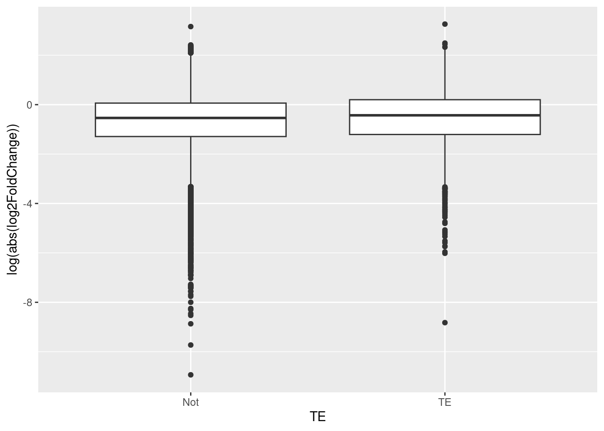
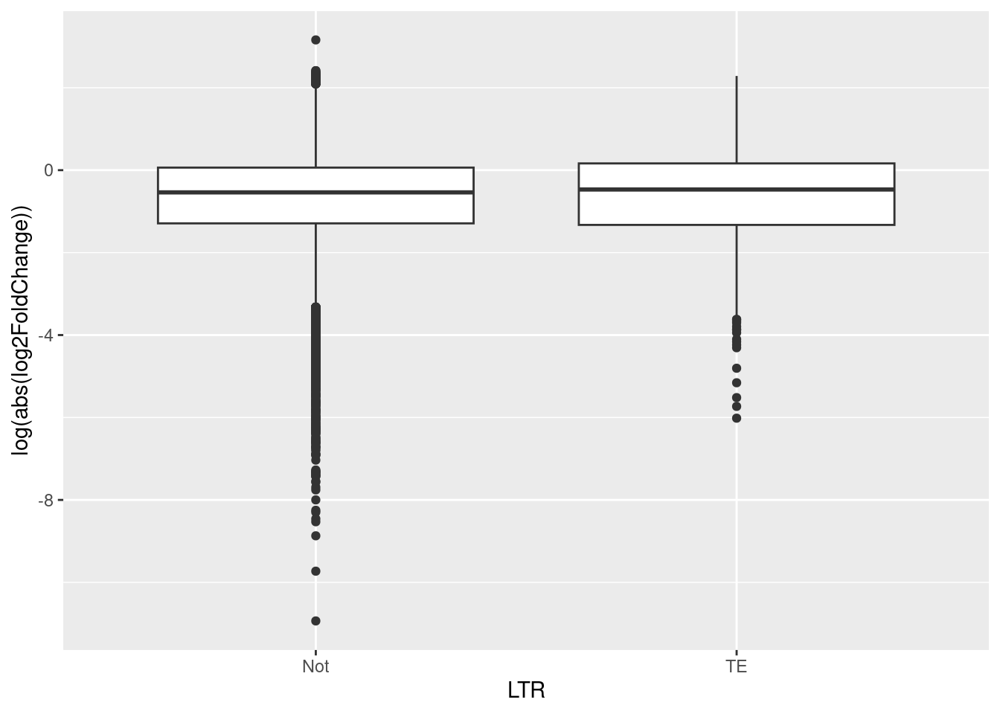
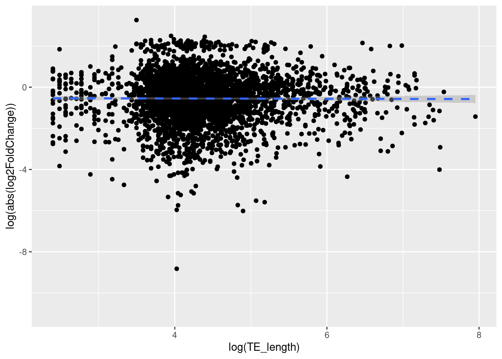
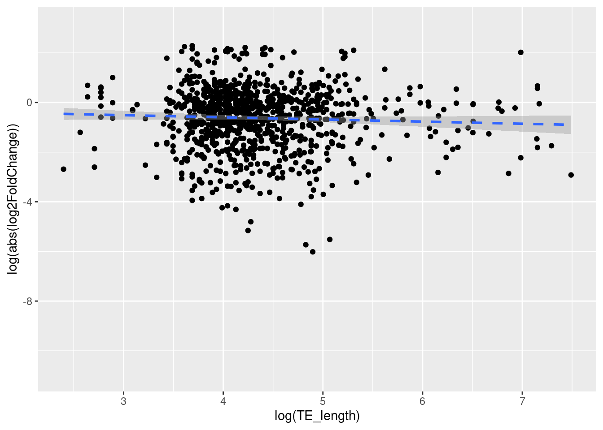

library("tidyr")
library("dplyr")
library("ggpubr")
library("stringr")
library("plyr")Final Project Report
1 Introduction
Apart from the contribution of all transposable elements, we will also test whether LTR has a significant contribution to worker-queen differentiation. Furthermore, we will test to see if the transcripts that has TE may be more strongly differentially expressed in queens and if longer transposable elements are strongly diferentially expressed.
According to Grynberg et al. (2010), transposable elements (TEs) can be categorized into 2 separate classes, based on their dispersion mechanisms. Class I retrotransposons require an RNA intermediate in their transposition cycle and they synthesize a cDNA copy based on the RNA strand using reverse transcription (Grynberg et al. 2010). Class II elements follow only an excision and insertion cycle.
Here, we hypothesize that LTRs in the TEs class are not contributing to the differentiation between queens and workers in eusocial shrimps. We expect to equal amounts of TEs in differentially expressed (DE) genes than in non-DE genes.
2 Methods & Results
From the eusocial shrimp Synalpheus elizabethae, we obtained RNA-seq data from three queens and three workers. The transcriptome is assembled with Trinity (Haas et al. 2013) and transposable elements were identified with Repeat Masker (Tarailo-Graovac and Chen 2009). We performed differential gene expression analysis using Galaxy (Blankenberg et al. 2010) and DESeq2 (Love et al. 2014). All statistical analyses were performed in R and detailed below.
2.1 Differential expressed transcripts
Among 29,833 transcripts that were shared among the six samples, 122 are up regulated and 141 are down regulated.
2.2 Transcribed transposable elements
From the transcriptome, 8,970 transcripts contained transposable elements. The more abundant TE class was DNA transposons, followed by LTR and LINE, with SINE being the least abundant.
2.3 Are there more TEs in differentially expressed transcripts?
If TEs are contributing to the evolution of the worker-queen differentiation, we expect to find more TEs in differentially expressed (DE) genes than in non-DE genes. Therefore, we performed a Chi-sqared test of independence on the binomial predictor variable DE (DE vs. NS, for differentially expressed vs. non-significant) against the response variable TE (TE vs. not, for having TE vs. not).
The results showed that the variables DE and TE are independent (Chi-squared = 2.160, d.f. = 1, p = 0.142). This means that the proportions of transcripts having TEs or not are not statistically different between transcripts that are and are not differentially expressed between queens and workers
Further, we tested and showed that TE class (DNA, LTR, LINE, and SINE) did not affect the variable DE (Chi-squared = 1.204, d.f. = 3, p = 0.752).
2.4 Does TE transcripts result in stronger differential expression?
If TEs are contributing to the evolution of the worker-queen differentiation, then it is believed that the transcripts that has TE may be more strongly differentially expressed in queens. In order to determine this, a two sample t-test is used and its results are analyzed so that we can test if our hypothesis is correct.
The results showed that the variables TE and log2FoldChange (DE) are dependent (t.test = -6.9077, df = 4547.2, p-value = 5.608e-12). This means that the transposable elements are more strongly differentially expressed in queens then workers, aiding in the evolution of worker-queen differentiation. Thus, our theory is supported by the results.
# Predictor = TE (Y or N, categorical & binomial), Response = log2FoldChange (continuous), use log(abs(log2FoldChange))
# use t-test
t.test(log(abs(log2FoldChange))~TE, data = df_tranTE)
Welch Two Sample t-test
data: log(abs(log2FoldChange)) by TE
t = -6.9077, df = 4547.2, p-value = 5.608e-12
alternative hypothesis: true difference in means between group Not and group TE is not equal to 0
95 percent confidence interval:
-0.1908548 -0.1064702
sample estimates:
mean in group Not mean in group TE
-0.7018847 -0.5532222 # plot data
ggplot(data = df_tranTE, aes(x = TE, y = log(abs(log2FoldChange)))) +
geom_boxplot() +
labs(x = "TE", y = "log(abs(log2FoldChange))")
Now we filter out the TE class so that only the LTR TEs are shown and determine if our theory is still correct.
# Create a table that filters out TE class with only LTR
df_tranTE_LTR = filter(df_tranTE, TE_class == "LTR"|is.na(TE_class))
# Predictor = LTR(TE) (Y or N, categorical & binomial)
# Response = log2FoldChange (continuous), use log(abs(log2FoldChange))
# use t-test
t.test(log(abs(log2FoldChange))~TE, data = df_tranTE_LTR)
Welch Two Sample t-test
data: log(abs(log2FoldChange)) by TE
t = -1.786, df = 995.77, p-value = 0.07441
alternative hypothesis: true difference in means between group Not and group TE is not equal to 0
95 percent confidence interval:
-0.156975174 0.007387353
sample estimates:
mean in group Not mean in group TE
-0.7018847 -0.6270908 # plot data
ggplot(data = df_tranTE_LTR, aes(x = TE, y = log(abs(log2FoldChange)))) +
geom_boxplot() +
labs(x = "LTR", y = "log(abs(log2FoldChange))")
The results showed that the variables LTR (TE) and log2FoldChange (DE) are independent (t.test = -1.786, df = 995.77, p-value = 0.07441 ). This means that the LTR class of TEs does not have an effect on differnetial expression or not are not statistically different between transcripts that are and are differentially expressed between queens and workers. This does not support our theory that TE may be more strongly differentially expressed in queens.
2.5 Does TE Length have an effect on differential expression?
If TEs are contributing to the evolution of the worker-queen differentiation, then it is believed that the transcripts that has longer TE may be more strongly diferentially expressed. In order to determine this, a linear regression test is used and its results are analyzed so that we can test if our hypothesis is correct.
The results showed that the variables TE_length and log2FoldChange (DE) are independent (F-statistic= 2.125 on 1 and 931 DF, p-value= 0.1452). This means that the transposable elements’ lengths do not have an effect on how strongly a TE is differentially expressed, giving us a slope and intercept very close to zero. Thus, our theory is not supported with this result.
# Predictor = TE_length (continuous). Note that not all genes in df_tranTE has TE, so we’ll need to filter it to just rows with TEs. We should transform it with log(TE_length) to conform with normality.
# Response = log2FoldChange (continuous). Note again that log2FoldChange can be analyzed in two ways. We will use log(abs(log2FoldChange)) here.
# Use linear regression
lm_HA = lm(formula = log(abs(log2FoldChange)) ~ log(TE_length), data = df_tranTE)
lm_HA
Call:
lm(formula = log(abs(log2FoldChange)) ~ log(TE_length), data = df_tranTE)
Coefficients:
(Intercept) log(TE_length)
-0.522573 -0.007008 # Plot the data
ggplot(data = df_tranTE, aes(x = log(TE_length), y = log(abs(log2FoldChange)))) +
geom_point() +
geom_smooth(method = lm, linetype= "dashed") `geom_smooth()` using formula = 'y ~ x'Warning: Removed 26335 rows containing non-finite values (`stat_smooth()`).Warning: Removed 26335 rows containing missing values (`geom_point()`).
Now we filter out the TE class so that only the LTR TEs are shown and determine if our theory is still correct.
Hypothesis- If the hypothesis is true (TEs are contributing to the evolution of the worker-queen differentiation), transcripts that has longer TE may be more strongly diferentially expressed.
The results showed that the variables TE length of LTR’s and log2FoldChange (DE) are also independent (linear regression = 2.125, D.F = 1 and 931, p-value: 0.1452). We fail to reject the null hypothesis because the p value > 0.05. This means that the length of TEs in the LTR class does not have an effect on differential expression or not are statistically different between transcripts that are and are not differentially expressed between queens and workers.
# Predictor = TE_length (continuous). Note that not all genes in df_tranTE has TE, so we’ll need to filter it to just rows with TEs. We should transform it with log(TE_length) to conform with normality.
# Response = log2FoldChange (continuous). Note again that log2FoldChange can be analyzed in two ways. We will use log(abs(log2FoldChange)) here.
# Use linear regression
lm_HA_LTR = lm(formula = log(abs(log2FoldChange)) ~ log(TE_length), data = df_tranTE_LTR)
lm_HA_LTR
Call:
lm(formula = log(abs(log2FoldChange)) ~ log(TE_length), data = df_tranTE_LTR)
Coefficients:
(Intercept) log(TE_length)
-0.25215 -0.08625 Plot the Linear Regression
# Plot the data
ggplot(data = df_tranTE_LTR, aes(x = log(TE_length), y = log(abs(log2FoldChange)))) +
geom_point() +
geom_smooth(method = lm, linetype= "dashed") `geom_smooth()` using formula = 'y ~ x'Warning: Removed 26335 rows containing non-finite values (`stat_smooth()`).Warning: Removed 26335 rows containing missing values (`geom_point()`).
# Summary
summary(lm_HA_LTR)
Call:
lm(formula = log(abs(log2FoldChange)) ~ log(TE_length), data = df_tranTE_LTR)
Residuals:
Min 1Q Median 3Q Max
-5.3419 -0.6897 0.1683 0.8012 2.8746
Coefficients:
Estimate Std. Error t value Pr(>|t|)
(Intercept) -0.25215 0.26047 -0.968 0.333
log(TE_length) -0.08625 0.05916 -1.458 0.145
Residual standard error: 1.257 on 931 degrees of freedom
(26335 observations deleted due to missingness)
Multiple R-squared: 0.002277, Adjusted R-squared: 0.001206
F-statistic: 2.125 on 1 and 931 DF, p-value: 0.14523 Conclusion
In summary, we found that transcripts that have TEs are not more differentially expressed. Also, the class of TE does not affect whether a transcribe is differentially expressed. There were unexpected results in our research where it was believed that the length of the TEs are not more strongly diferentially expressed. We also determined that TE transcripts do result in stronger differrential expression. However, when we filtered the TE class to just LTR, the results differed. It was determined that LTR does not have an effect on how strong a TE if differentially expressed. These results do not support the hypothesis that TEs are contributing to the evolution of the worker-queen differentiation.
Although the results did not support the conclusion, the dichotomous classification of transcripts into merely differentially expressed or not may conceal important pattern in the strength of differential expression. Further analysis should consider using a continuous variable based on the fold change of differential expression.